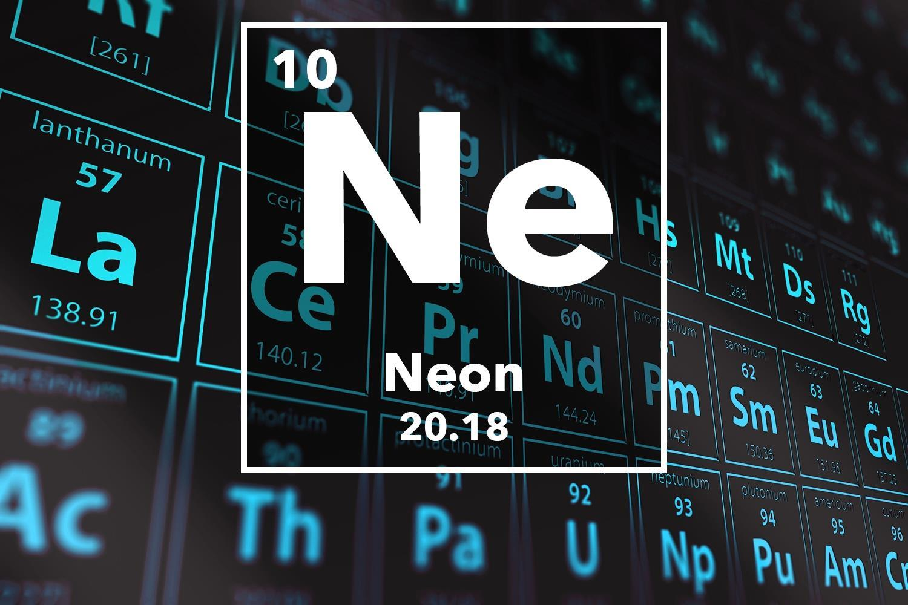

NEON

Appearance of Neon:
colorless gas exhibiting an orange-red glow when placed in an electric field.
Standard atomic weight:
Ar°(Ne)
20.1797±0.0006
20.180±0.001 (abridged)
Neon in the periodic table:
Atomic number (Z): 10
Group group: 18 (noble gases)
Period period: 2
Block: p-block
Electron configuration : [He] 2s2 2p6
Electrons per shell: 2, 8
Physical properties of Neon:
Phase at STP: gas
Melting point: 24.56 K (−248.59 °C, −415.46 °F)
Boiling point: 27.104 K (−246.046 °C, −410.883 °F)
Density (at STP): 0.9002 g/L
when liquid (at b.p.): 1.207 g/cm3
Triple point: 24.556 K, 43.37 kPa
Critical point: 44.4918 K, 2.7686 MPa
Heat of fusion: 0.335 kJ/mol
Heat of vaporization: 1.71 kJ/mol
Molar heat capacity: 20.79 J/(mol·K)
Chemical Properties of Neon:
Oxidation states: 0
Ionization energies:
1st: 2080.7 kJ/mol
2nd: 3952.3 kJ/mol
3rd: 6122 kJ/mol
Covalent radius: 58 pm
Van der Waals radius: 154 pm
Other Properties of Neon:
Natural occurrence: primordial
Crystal structure: face-centered cubic (fcc)Face-centered cubic crystal structure for neon
Speed of sound: 435 m/s (gas, at 0 °C)
Thermal conductivity: 49.1×10−3 W/(m⋅K)
Magnetic ordering: diamagnetic
Molar magnetic susceptibility: −6.74×10−6 cm3/mol (298 K)
Bulk modulus: 654 GPa
CAS Number: 7440-01-9
History:
Prediction: William Ramsay (1897)
Discovery and first isolation: William Ramsay & Morris Travers (1898)
Uses of Neon:
Applications:
Neon is often used in signs and produces an unmistakable bright reddish-orange light.
Although tube lights with other colors are often called "neon", they use different noble gases or varied colors of fluorescent lighting.
Neon is used in vacuum tubes, high-voltage indicators, lightning arresters, wavemeter tubes, television tubes, and helium–neon lasers.
Liquefied neon is commercially used as a cryogenic refrigerant in applications not requiring the lower temperature range attainable with more extreme liquid-helium refrigeration.
Neon, as liquid or gas, is relatively expensive – for small quantities, the price of liquid neon can be more than 55 times that of liquid helium.
Driving neon's expense is the rarity of neon, which, unlike helium, can only be obtained in usable quantities by filtering it out of the atmosphere.
Semiconductor industry:
As of 2022 gas mixtures that include neon are used to power lasers for EUV lithography.